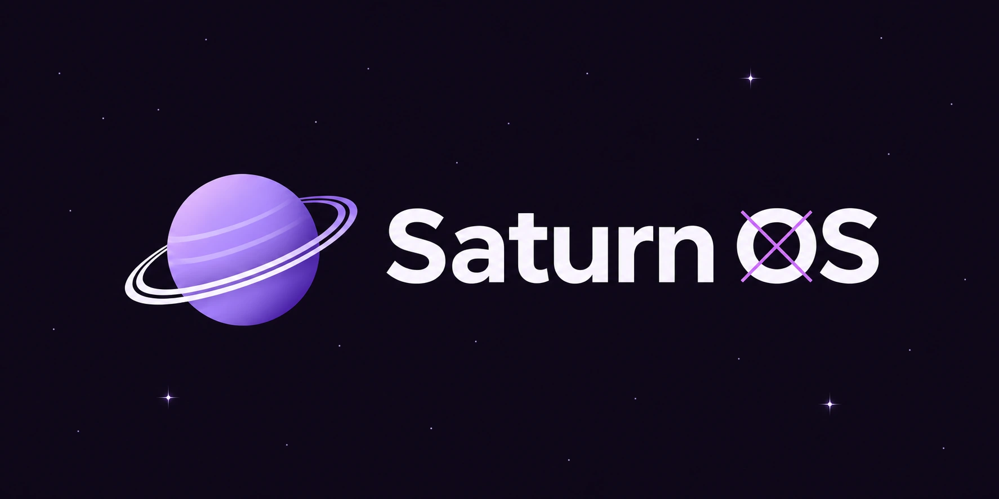

0.1 in development
Linux.
From scratch.
Saturn OS is an independent Linux distribution built with Linux From Scratch. The base system boots, and work on the live desktop is underway.
Live image status
Inside the current build
Saturn OS starts from a systemd-based Linux From Scratch build. The base system has been booted in QEMU, where the live desktop can be tested as it comes together.
- Version
- 0.1
- Base system
- LFS 13.1-systemd
- Kernel
- 7.1.8-saturn
Download Saturn OS
The first live image is still in development. The download will appear here when it’s ready.
ISO pending